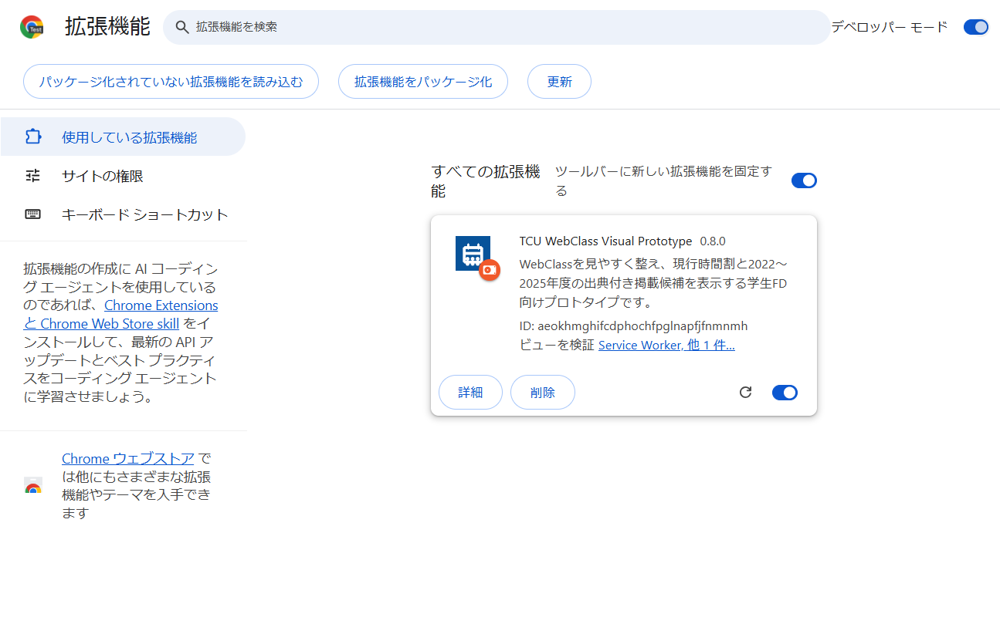
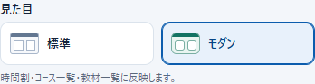
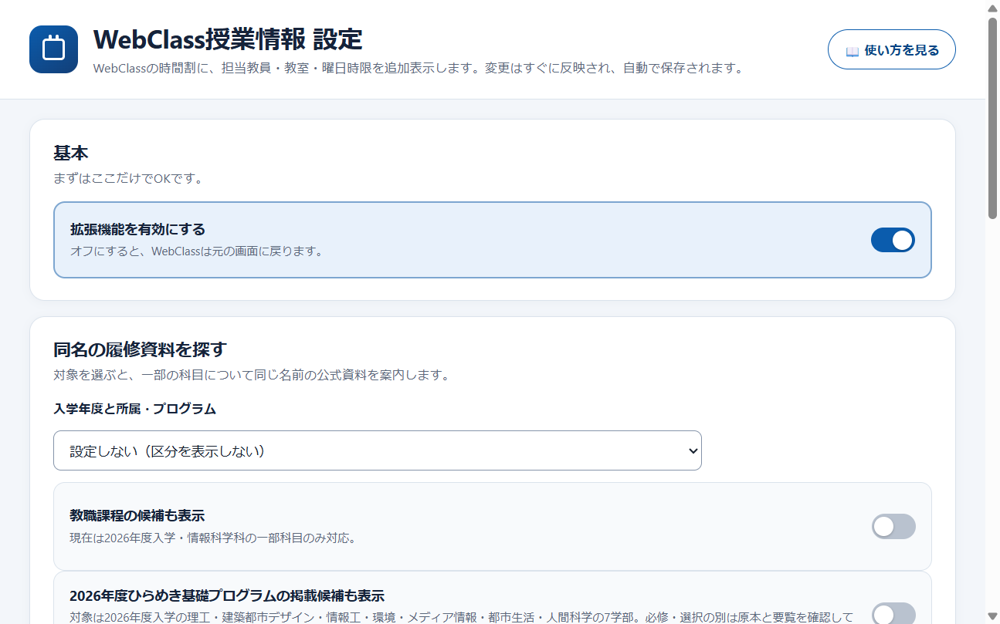

0始める前に確認
- パソコンで行います（スマートフォンのブラウザには入れられません）。
- ブラウザーは Google Chrome か Microsoft Edge。
- ZIPファイル
TCU_WebClass_Visual_…zipをダウンロード済み。
1ZIPファイルを「展開」する
ZIPは圧縮された状態です。そのままでは使えないので、まず展開します。
- Windows：ダウンロードしたZIPを右クリック → 「すべて展開…」 → 「展開」。
- Mac：ダウンロードしたZIPをダブルクリックすると、同じ場所にフォルダーが作られます。
- 展開したフォルダーを開き、
manifest.jsonが直下にあることを確認。
2「拡張機能」のページを開く
ブラウザーの上のアドレス欄に、次の文字を入力して Enter を押します。
chrome://extensions
edge://extensions
「コピー」を押して、アドレス欄に貼り付け（Windows：Ctrl + V、Mac：⌘ + V）→ Enter が確実です。リンクをクリックしても開けません（ブラウザーの仕様です）。
メニューから開く場合：右上の ︙（Edgeは …）→ 拡張機能 → 拡張機能を管理
3「デベロッパーモード」をオンにする
拡張機能ページの右上（Edgeは左下）にあるスイッチをオンにします。

「開発者向け」と聞くと不安になりますが、自分のパソコンにフォルダーから追加するための、ふつうの設定です。
4フォルダーを読み込む
- 「パッケージ化されていない拡張機能を読み込む」を押す。
- 手順1で展開したフォルダーのうち、
manifest.jsonが直下に見えるいちばん内側のフォルダーを選ぶ。ChromeでもEdgeでも同じです。 - 「フォルダーの選択」を押す。
- 一覧に「TCU WebClass Visual Prototype」が出て、スイッチがオンなら成功です。
おすすめ：ツールバーに固定する
アドレス欄の右にあるパズルのアイコン 🧩を押し、この拡張機能のピン 📌を押すと、いつでもアイコンから設定を開けます。
5WebClassを開いて使ってみる
- WebClass を開いて、いつも通りログインする。
- 「コースリスト」（時間割が並ぶ画面）を表示する。
- 時間割がカード表示になれば完了です 🎉 対応する科目には教室や担当教員も表示されます。
見た目を切り替える（v0.9.0 リリース候補）
ブラウザー右上の拡張機能アイコンを押し、「見た目」→「モダン」を選びます。コース一覧の左側にある「表示オプション」からも切り替えられます。時間割・コース一覧・教材一覧にすぐ反映され、同じ場所で「標準」に戻せます。切替が無効な場合はポップアップの「画面を整える」をオンにしてください。

キーボード操作
WebClassのタブを再読み込みするときは Windows：Ctrl + R または F5、Mac：⌘ + R。拡張機能ページを開くにはアドレス欄で Windows：Ctrl + L、Mac：⌘ + L を押して、手順2のURLを入力します。
同名の履修資料を探す設定
拡張機能ページでこの拡張機能の「詳細」→「拡張機能のオプション」を開き、「入学年度と所属・プログラム」を選びます。教職や2026年度ひらめきの対象者は該当スイッチもオンにします。設定が不要な場合は「設定しない」のままで使えます。

できること
?困ったとき
何も表示が変わらない
① WebClassのタブを WindowsはCtrl + R、Macは⌘ + R で更新。② 「コースリスト」画面か確認（授業ページの中では一部表示のみです）。③ 拡張機能アイコン → スイッチがオンか確認。④ 拡張機能ページで、この拡張機能がオンか確認。
「マニフェスト ファイルがありません」と出る
選んだフォルダーが違います。manifest.json が直接入っているフォルダーを選んでください。ZIPの中を開いたままではなく、必ず「すべて展開」してから選びます。
「デベロッパーモードの拡張機能を無効にしてください」と出る
ブラウザー起動のたびに出る案内です。×で閉じてそのまま使えます（「キャンセル」を選ぶ）。
デベロッパーモードのスイッチが押せない・拡張機能が追加できない
大学・会社などの管理PCでは、組織の設定で制限されていることがあります。その場合は個人のPCで試すか、管理者に確認してください。
ブラウザーを再起動したら消えた／使えなくなった
展開したフォルダーを削除・移動していないか確認してください。移動した場合は、手順4でもう一度読み込み直します。
元の画面に戻したい
拡張機能アイコンの右上スイッチをオフにするだけで、元のWebClass画面に戻ります。完全に消すときは、拡張機能ページで「削除」。
新しいバージョンに更新するには／設定を移すには
①設定画面の「上級者向け：時間割データの上書き」で「書き出す」を押してJSONを保存します。表示の各スイッチも必要なら控えてください。②新しいZIPを展開します。③拡張機能ページで旧版をオフにしてから、新版のフォルダー（manifest.json が直下にあるもの）を読み込みます。④新版を有効にして動作を確認し、設定画面でJSONを貼り付けて検証・保存、表示設定を戻します。⑤確認できたら旧版を削除します。ブラウザーや拡張機能IDが変わる場合、設定は自動では引き継がれません。旧版を確認前に削除しないでください。
表示された教室・担当・時間が資料と違う
2026年度の時間割は調査用スナップショットで、最新資料との全件照合は未完了です。過年度データの多くは未確認の自動抽出候補です。授業詳細のPDFリンクから元の行を確認してください。休講・教室変更はWebClassのお知らせを優先してください。
プライバシー
- 動作するのは
webclass.tcu.ac.jpのみ。 - 時間割表示のための科目情報と、締切一覧のための教材名・締切・状態をWebClassの画面から読み取ります。ID・パスワード・成績・提出物の内容は読み取りません。
- 拡張機能は外部サーバーへデータを送信しません。設定と上書きデータはこのブラウザー内に保存されます。